Galería y contenido multimedia
Galería de imágenes
Las fotografías están en JPG o WebP, el icono en PNG con fondo transparente y las ilustraciones en SVG.
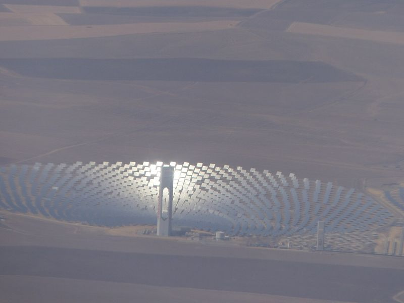

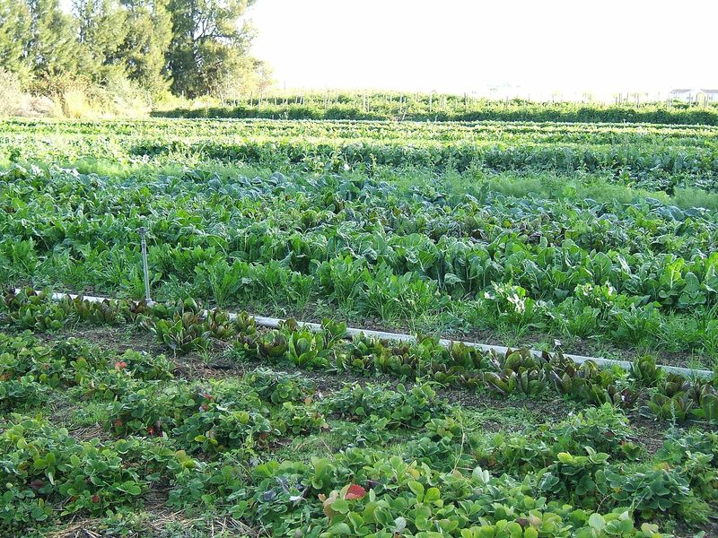

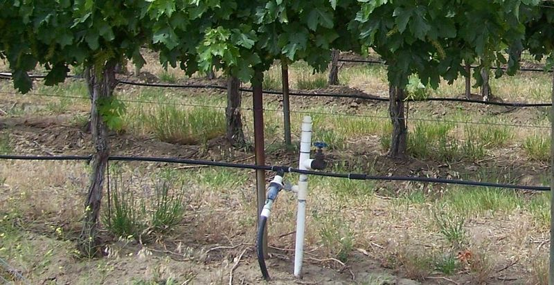

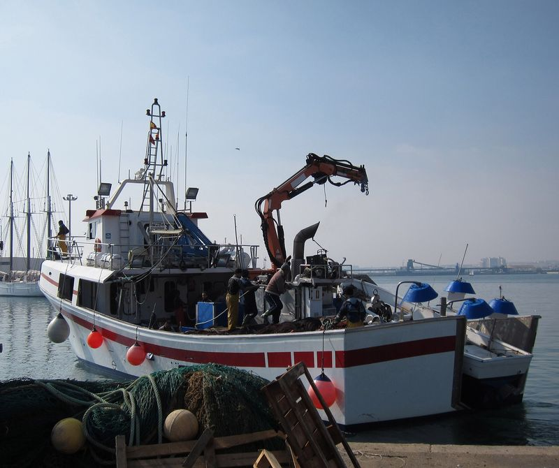

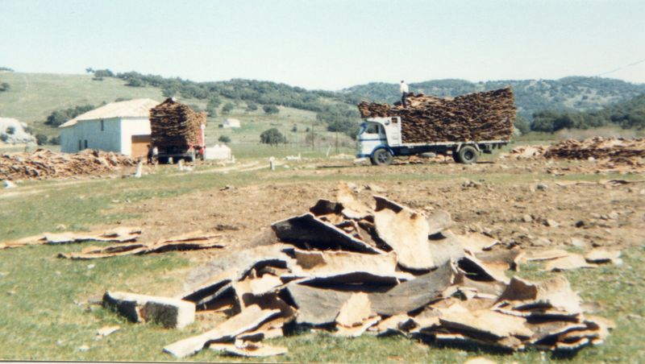

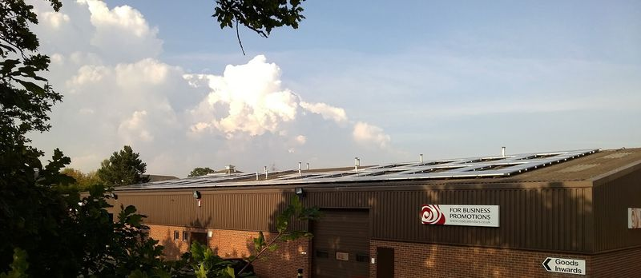

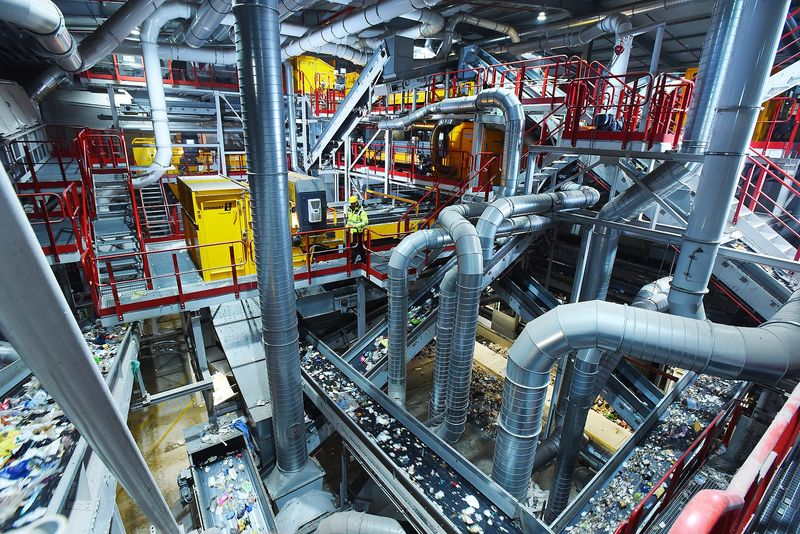

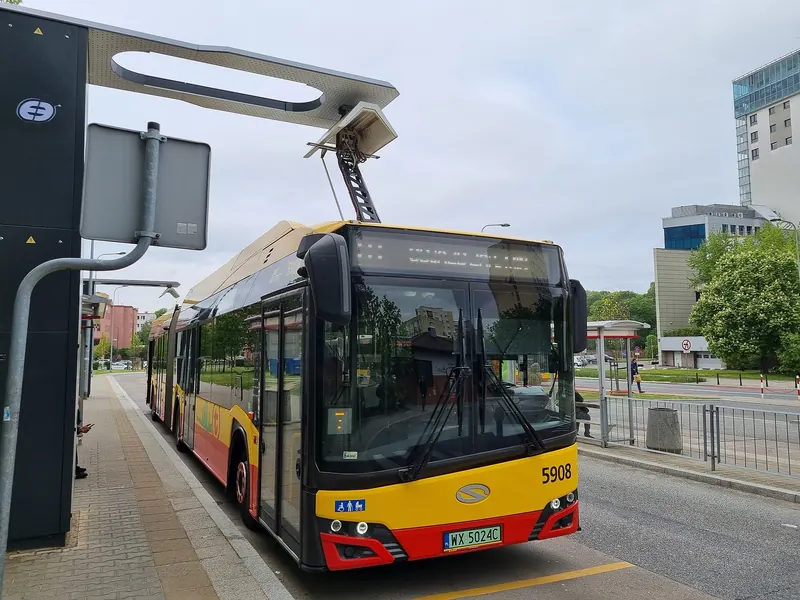

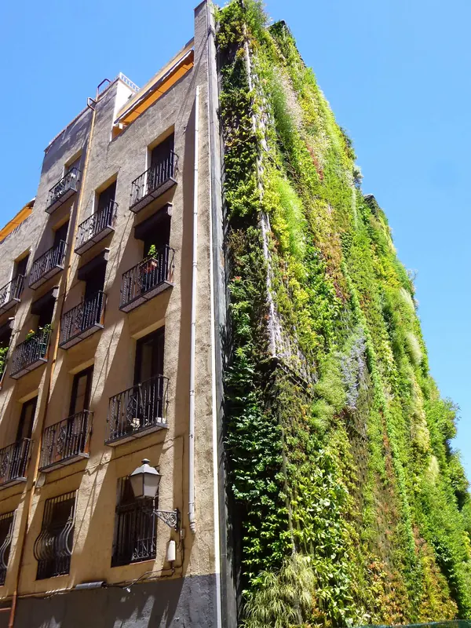

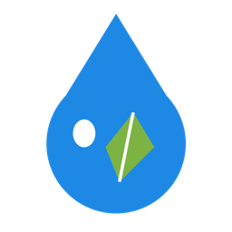
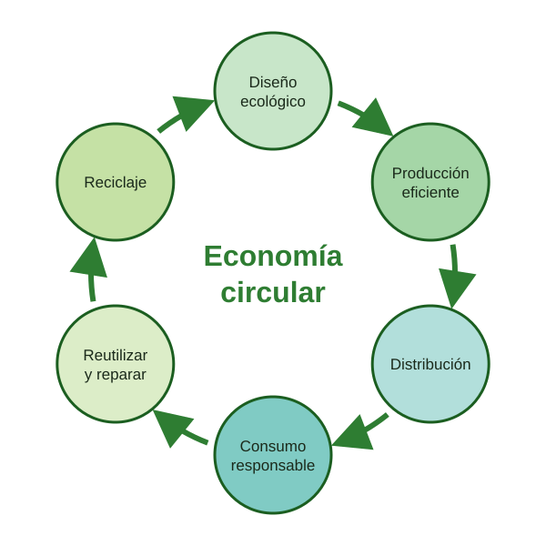
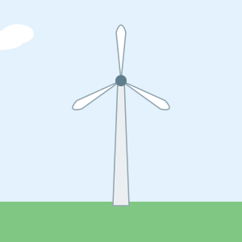
Mapa de imagen: los tres sectores productivos
Pulsa sobre cada fotografía para leer la parte del artículo dedicada a ese sector. El rectángulo, el círculo y el hexágono son tres zonas interactivas diferentes.
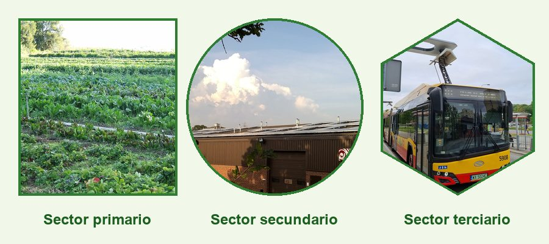
Imagen compuesta propia a partir de fotos de Hajhouse (dominio público), Out Walking (CC BY-SA 4.0) y Maksym Kozlenko (CC BY 4.0). Se distribuye con licencia CC BY-SA 4.0.
Vídeo: replantear el progreso con la economía circular
Vídeo de animación de 3 minutos y 48 segundos de la Ellen MacArthur Foundation. Compara la naturaleza, donde no hay vertederos porque los residuos de una especie alimentan a otra, con nuestra economía lineal de «tomar, fabricar y tirar». Después explica los dos ciclos de la economía circular: el biológico (materiales compostables que vuelven al suelo) y el técnico (productos diseñados para desmontarse, repararse y fabricarse de nuevo), todo ello alimentado con energías renovables.
La narración está en inglés. Tiene subtítulos en español (activados por defecto) y en inglés.
Vídeo: Ellen MacArthur Foundation, licencia CC BY 3.0. Subtítulos de la comunidad de Wikimedia Commons. Convertido a MP4 y WebM de 480p.
Audios
Sonido de un aerogenerador
Grabación real de 37 segundos del sonido de un aerogenerador en funcionamiento. Sirve para comprobar el ruido que produce esta fuente de energía renovable.
Grabación: Work With Sounds / Werstas, CC BY 4.0.
Sonido de un tractor
Grabación real de 29 segundos de un tractor John Deere 5820 con motor diésel, primero al ralentí y después en marcha. La maquinaria agrícola, forestal y pesquera produce el 3,4 % de las emisiones de España (ver la tabla de emisiones).
Grabación: Sami Laaksonen para Work With Sounds / Werstas, CC BY 4.0.
Cada audio se ofrece en dos formatos: MP3, compatible con todos los navegadores, y OGG, un formato libre. El navegador reproduce el primero que sea capaz de leer.
Contenido externo
Vídeo: la economía circular
Reportaje del programa El escarabajo verde que explica qué es la economía circular, compartido por Ecologistas en Acción.
Ver el reportaje sobre economía circular en YouTube
Mapa: planta solar PS10
Vista de satélite de la planta termosolar PS10, en Sanlúcar la Mayor (Sevilla), la misma que aparece en la galería.